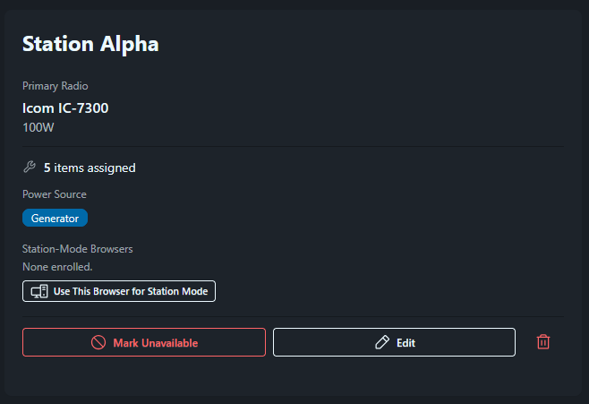

Bind a shared computer to its station, so operators can take turns logging by typing their callsign.
Station mode is for a computer that stays at a station while operators take turns on it. It can be club equipment or a member's laptop. You bind the computer's browser to its station once. After that, an operator can sit down, type their callsign, and click Start Logging. Nobody needs an email or password. When they're done, they end the session and the computer is ready for the next operator.
The GOTA station works the same way, except the coach signs in and enters each GOTA operator.
1 On the station computer, sign in to FD Commander with your own account and open Event Management > Stations.
2 Find the station's card. The Station-Mode Browsers block near the bottom lists browsers already bound to it, or says "None enrolled."
3 Click Use This Browser for Station Mode. The browser will ask you to confirm and warn that you'll be signed out.

4 Click OK. Being signed out is expected. You should see the station-mode screen, with "Station Mode" and the station's name at the top and a Your callsign box below.
FD Commander remembers the binding with a cookie (a small file the browser keeps for the site) that lasts a year, so it survives reboots and power cuts. If a station runs two laptops, bind both. Each bound browser shows on the station's card with when it was enrolled and last used.
A private or incognito window deletes the cookie when it closes, and so does clearing the browser's cookies. Either one turns the laptop back into a normal browser. If that happens, revoke the old entry on the Stations page and bind the browser again.
While nobody is signed in, every page except the regular sign-in page sends you back to the station-mode screen. A station captain can still sign in there.
If the station computer only runs FD Commander, put the browser in full screen. Press F11 on Windows and Linux, or Control+Command+F on a Mac. That hides the tabs and address bar, gives the log more room, and keeps operators on the logging screen. Press the same keys to leave full screen. If operators also use N1MM Logger+ or WSJT-X on that computer, leave the browser in a normal window so they can switch between apps.
1 Type a callsign in Your callsign and click Start Logging. Letters, numbers, and "/" are allowed, up to 12 characters.
2 If FD Commander doesn't know the callsign, it will ask for a First name and Last name. Fill them in and click Start Logging again.
3 Session setup opens for this station. Choose the band, mode, and power, then click Start Session. From here the logger works as usual.
4 When done, click the red End Session button in the top-right corner (it shows the callsign on wider screens). That ends the session, signs the operator out, and brings back the station-mode screen.
Brief your operators on step 4. If someone walks away without clicking End Session, the next person will log under their callsign until the idle timeout kicks in.
Station mode doesn't ask for a password. Any callsign works, including one that has an account, and contacts go to whatever callsign was typed. That's why the terminal can do so little.
Operators can log on the bound station and view the log, Dashboard, Public Page, Section Map, Scoring, Stations list, Shift Schedule, Shift Dashboard, Site Safety, Club Equipment, Weather, Gallery, and the visitor Guestbook form. Everything else is hidden, including Transcribe Paper Log, Message Traffic, the bulletin page, My Catalog, profiles, and the Administration menu. A direct link to another page shows "This page is not available in station mode."
These pages are read-only. Operators can't upload or delete photos, check off safety items, edit the dashboard layout, or log on a different station ("This browser can only log for its assigned station."). The same limits apply when an Event Manager types their callsign at the terminal.
On a GOTA station, the screen asks for the Control operator callsign instead. The licensed control operator (usually your GOTA coach) starts the session with their callsign and stays at the station. Each GOTA operator is entered in the GOTA Operator section of the logging screen.
After 15 minutes with no typing, clicking, or touching, the terminal asks Are you still operating? and counts down 60 seconds. I'm Still Here dismisses it. End Session Now, or letting the countdown run out, ends the session and brings back the station-mode screen.
There are three ways, and each needs the Manage Stations permission.
If your password is refused at the exit link, check that your account has the Manage Stations permission. An Operator account can't exit station mode, even with the right password. The audit log records every bind, revoke, exit, and station-mode session.
When someone types a callsign FD Commander doesn't know, it creates a ghost account with the name they entered. External loggers and ADIF imports do the same for unknown operators. A ghost account holds contacts but can only sign in at a station-mode terminal.
To find them, go to Administration > Users and set the Status filter to Ghost (No Login). Each one has a Ghost badge.
To give a ghost a real login, such as a new member who first showed up at the GOTA table, open the actions menu (⋮) on that row and choose Activate Account. Enter an Email, check the First name and Last name, and copy the Temporary Password before clicking Activate. They'll have to change it the first time they sign in. The account gets the Operator role if it has none, and keeps everything they logged. This needs the Manage Users permission.
To keep operators off a broken station, open Event Management > Stations and click Mark Unavailable on its card. Pick a Reason (Equipment Failure, Antenna Problem, Maintenance / Setup, or Other), add a Note (optional) like "Finals blown on the amp, swapping radios," and confirm. Any active session on that station will end.
The card turns red and shows the reason, the note, and who marked it. On the Log Contact page, the station's Select Station button is disabled and shows "Down" with the reason. A terminal bound to the station shows a warning. Operators can still sign in there to view the log, but they can't start a session. When it's fixed, click Mark Ready. Station Captains, Event Managers, and System Administrators can do both.
During your dry run, set up a terminal and have a few people take turns: sign in, log a test contact, end the session, and let one sit idle until the timeout fires. It'll save a lot of "how do I get out of this?" on Saturday afternoon.